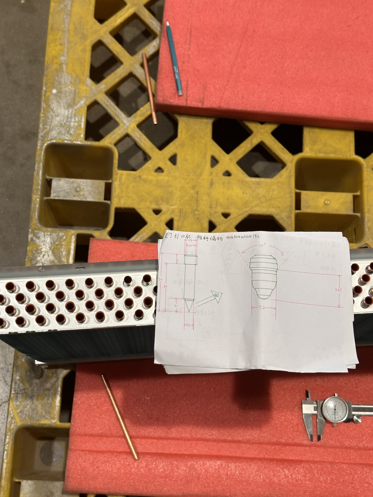

Manufacturing Process Improvement
Engineering work from my internship at Haiwu Technology involving production methods, layout, assembly, and standardization.
Explore case study →I’m interested in improving how people, processes, and systems work through engineering, data, and thoughtful design.
I’m an Industrial & Systems Engineering student at Rutgers University–New Brunswick. My experience spans manufacturing process improvement, materials research, sustainability work, and human-centered work design. I’m interested in understanding how real systems operate and finding practical ways to improve them.
Contributing to climate and sustainability initiatives through research, field and data work, writing, and outreach.
Supported polymer composite research using dynamic mechanical analysis, including calibration, data collection, troubleshooting, documentation, and literature review.
Worked on manufacturing process improvement through layout analysis, assembly redesign, workflow study, and process standardization.
A small selection of work where I can show the environment, the engineering problem, and my contribution.

Engineering work from my internship at Haiwu Technology involving production methods, layout, assembly, and standardization.
Explore case study →Experimental research involving dynamic mechanical analysis, equipment calibration, data collection, troubleshooting, and documentation.
More details coming laterAnalyzed a manual task and proposed improvements to reduce unnecessary motion, improve two-hand utilization, and consider operator safety.
More details coming laterScholarship recognition received in 2026.
I’m interested in opportunities where analytical thinking meets real-world systems.